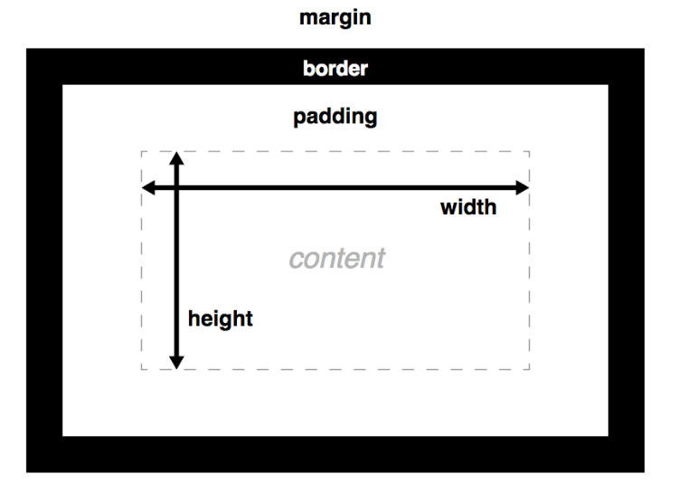

盒模型
什么是盒模型
CSS盒模型是网页布局的基础 ——每个元素被表示为一个矩形的方框，框的内容、内边距、边界和外边距像洋葱的膜那样，一层包着一层构建起来。浏览器渲染网页布局时，它会算出每个框的内容要用什么样式，周围的洋葱层有多大，以及框相对于其它框放在哪里。
盒模型的属性
文档的每个元素被构造成文档布局内的一个矩形框，框每层的大小都可以使用一些特定的CSS属性调整。相关属性如下:

width 和 height
width和 height设置内容框（content box）的宽度和高度。内容框是框内容显示的区域——包括框内的文本内容，以及表示嵌套子元素的其它框。
还以为设置设置大小约束而不是绝对的大小。这些属性包括min-width，max-width，min-height，max-height。
padding
padding 表示一个 CSS 框的内边距——这一层位于内容框的外边缘与边界的内边缘之间。该层的大小可以通过简写属性padding一次设置所有四个边，或者通过padding-top，padding-right，padding-left，padding-bottom属性一次设置一个边。
border
border是一个分隔层，位于内边距的外边缘以及外边距的内边缘之间。边界的默认大小为0——从而让它不可见——不过我们可以设置边界的厚度、风格和颜色让它出现。 border简写属性可以一次设置四个边例如 border: 1px solid black;但这个简写可以被各种普通书写的更详细的属性所覆盖.
margin
外边距（margin）代表 CSS 框周围的外部区域，称为外边距，它在布局中推开其它 CSS 框。其表现与 padding 很相似；简写属性为margin，单个属性margin-top，margin-right，margin-left，margin-bottom。
外边距有一个特别的行为被称作：外边距塌陷，当两个框彼此接触时，它们的间距将取两个相邻外边界的最大值，而非两者的总和。
溢流
当你使用绝对的值设置了一个框的大小（如，固定像素的宽/高），允许的大小可能不适合放置内容，这种情况下内容会从盒子溢流。我们使用overflow属性来控制这种情况的发生。它有一些可能的值，但是最常用的是：
auto: 当内容过多，溢流的内容被隐藏，然后出现滚动条来让我们滚动查看所有的内容。hidden: 当内容过多，溢流的内容被隐藏。visible: 当内容过多，溢流的内容被显示在盒子的外边（这个是默认的行为）
背景裁剪
框的背景是由颜色和图片组成的，它们堆叠在一起（background-color, background-image）。 它们被应用到一个盒子里，然后被画在盒子的下面。默认情况下，背景延伸到了边界外沿。这通常是OK的，但是在一些情况下假使你有一个平铺的背景图，你只想要它延伸到内容的边沿会怎么做？该行为可以通过设置盒子的background-clip属性来调整。
盒类型
块框（
blockbox）是定义为堆放在其他框上的框（例如：其内容会独占一行），而且可以设置它的宽高，之前所有对于框模型的应用适用于块框 （blockbox）行内框（
inlinebox）与块框是相反的，它随着文档的文字流动（例如：它将会和周围的文字和其他行内元素出现在同一行，而且它的内容会像一段中的文字一样随着文字部分的流动而打乱），对行内盒设置宽高无效，设置padding, margin 和 border都会更新周围文字的位置，但是对于周围的的块框（blockbox）不会有影响。行内块状框（
inline-blockbox） 像是上述两种的集合：它不会重新另起一行但会像行内框（inlinebox）一样随着周围文字而流动，而且他能够设置宽高，并且像块框一样保持了其块特性的完整性，它不会在段落行中断开。
默认状态下display属性值，块级元素display: block ，行内元素display: inline
布局
CSS页面布局技术允许我们拾取网页中的元素，并且控制它们相对正常布局流、周边元素、父容器或者主视口/窗口的位置。会涉及到浮动，定位，css表格，弹性盒子，网格等。
浮动
浮动技术允许元素浮动到另外一个元素的左侧或右侧，而不是默认的一个堆叠另一个。float 的主要用途是布置出多个列并且浮动文字以环绕图片。
float属性有四个可能的值：
left— 将元素浮动到左侧。right— 将元素浮动到右侧。none— 默认值, 不浮动。- inherit — 继承父元素的浮动属性。
清除浮动：clear可以取三个值：
left：停止任何活动的左浮动right：停止任何活动的右浮动both：停止任何活动的左右浮动
定位
定位允许我们将一个元素从它在页面的原始位置准确地移动到另外一个位置。有四种主要的定位类型需要我们了解：
- 静态定位是每个元素默认的属性——它表示“将元素放在文档布局流的默认位置——没有什么特殊的地方”。
- 相对定位允许我们相对元素在正常的文档流中的位置移动它——包括将两个元素叠放在页面上。这对于微调和精准设计非常有用。
- 绝对定位将元素完全从页面的正常布局流中移出，类似将它单独放在一个图层中. 我们可以将元素相对于页面的
<html>元素边缘固定，或者相对于离元素最近的被定位的祖先元素。绝对定位在创建复杂布局效果时非常有用，例如通过标签显示和隐藏的内容面板或者通过按钮控制滑动到屏幕中的信息面板. - 固定定位与绝对定位非常类似，除了它是将一个元素相对浏览器视口固定，而不是相对另外一个元素。 在创建类似页面滚动总是处于页面上方的导航菜单时非常有用。